chapter5 Aplicacion de Modelos
A continuacion nos concentraremos en la implementacion de modelos, en esta ocacion aplicaremos diferentes modelos para la prediccion de las series de tiempo, los modelos a aplicar son:
Holt-Winters
Auto-Arima
Prophet
Adicionalmente realizaremos un proceso de validacion cruzada para evaluar la precision de los modelos a traves de metricas como:
- ME
- RMSE
- MAE
- MPE
- MAPE
- MASE
- RMSSE
5.1 Aplicación de Holt-Winters Model.
Dada la evidencia de existencia de un valor medio, tendencia y estacionalidad en los datos; se permite la aplicación del modelo Holt-Winters; como modelo predictorio de largo y mediano plazo por medio de un triple suavizado exponencial al tener en cuenta los aspectos mencionados con anterioridad.
La primera decisión radica en elegir el tipo de patrón de estacionalidad, es decir, si este modelo debería ser representado por una estacionalidad aditiva o multiplicativa. Basándonos en la evidencia previamente encontrada, se observa una tendencia que aumenta o disminuye proporcionalmente con el promedio móvil de los datos, lo que sugiere que no permanece constante. Además, la amplitud de esta estacionalidad varía con el nivel encontrado. Por lo tanto, se decidió que el modelo a escoger será multiplicativo.
5.1.1 - Holt-Winters Multiplicativo
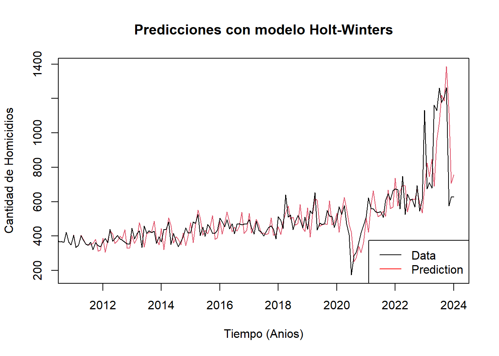
La gráfica nos brinda una visualización del comportamiento de las predicciones generadas por el modelo multiplicativo Holt-Winters. En un primer vistazo, podemos observar un ajuste cercano entre las predicciones y los datos base. Además, se aprecia una tendencia y estacionalidad similar entre ambas.
Los valores de los parámetro obtenidos son: Alpha: 0.694986 Beta: 0 Gamma: 0.0054929
Al revisar los parámetros usados se puede apreciar que el modelo está dando más peso al parámetro Alpha que corresponde a la tendencia.
Para un mejor ajuste, se probará modificar los parametros Beta, Gamma y Alpha del modelo holt-winters, dado a que éstas se asocian respectivamente con tendencia, estacionalidad y nivel (promedio móvil).
Alpha es un número entre 0 y 1 que determina cuanto peso se le da a las observaciones más recientes al calcular la tendencia.
Beta es un número entre 0 y 1 que determina cuanto peso se le da a las observaciones más recientes en cuanto su estacionalidad.
Gamma es un número entre 0 y 1 que determina cuanto peso se le da a las observaciones más recientes en cuanto su nivel (promedio móvil).
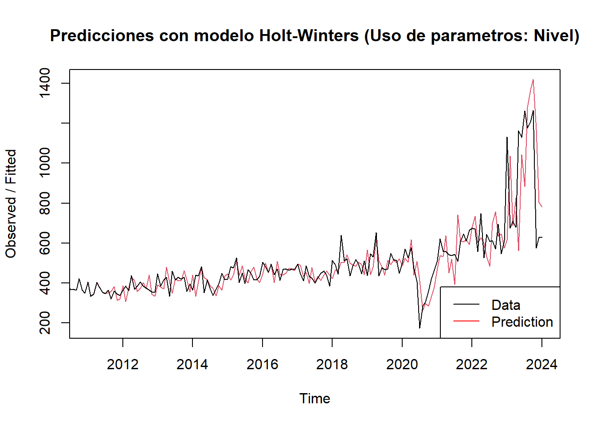
Al modificar dando más peso al parámetro Gamma correspondiente al Nivel, se puede apreciar como las estimaciones cambian en magnitud y los picos y valles no coinciden en igual proporción como en el modelo original.
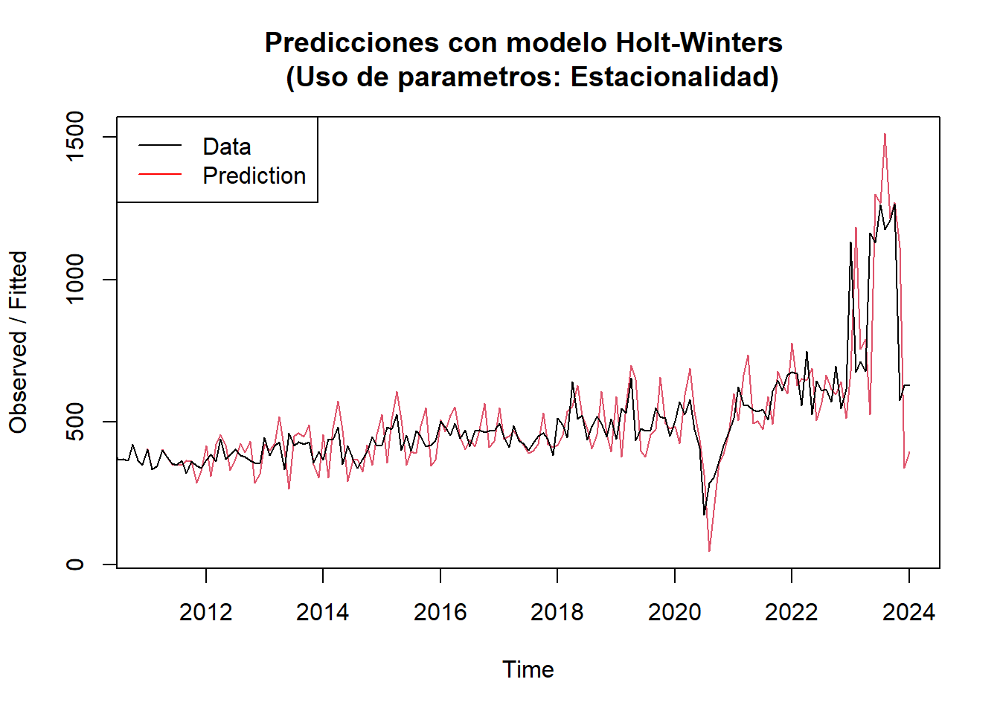
Al modificar dando más peso al parámetro Beta correspondiente a la Estacionalidad, se puede apreciar como las estimaciones del 2024 es muy diferente a los modelos anteriores, lo cual se explica al considerar lo ocurrido en el año 2023 como consecuencia de factores externos que sólo afectan en ese periodo de tiempo.
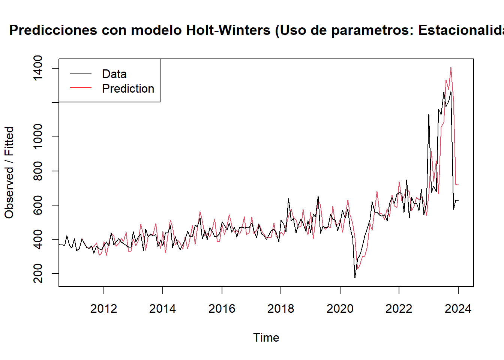
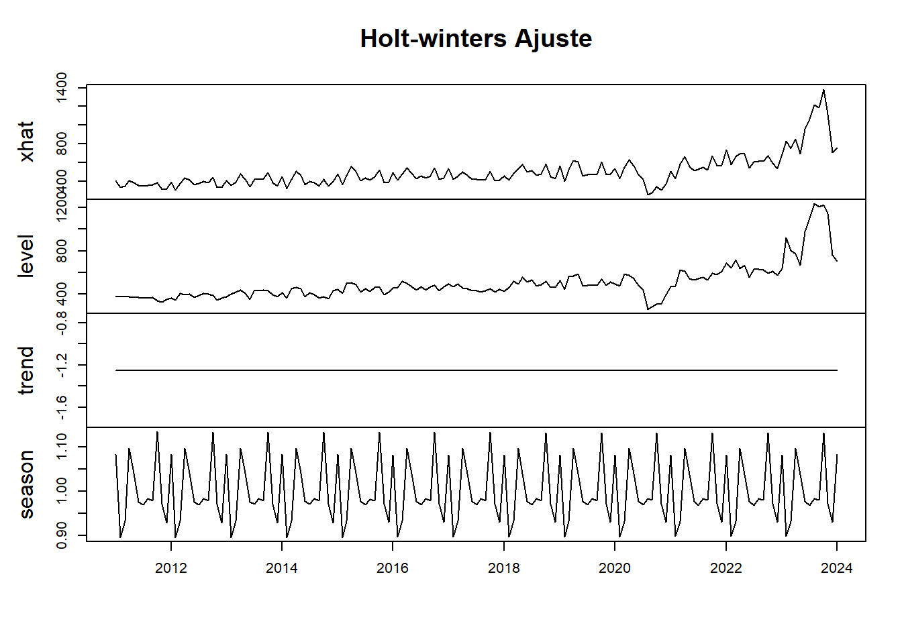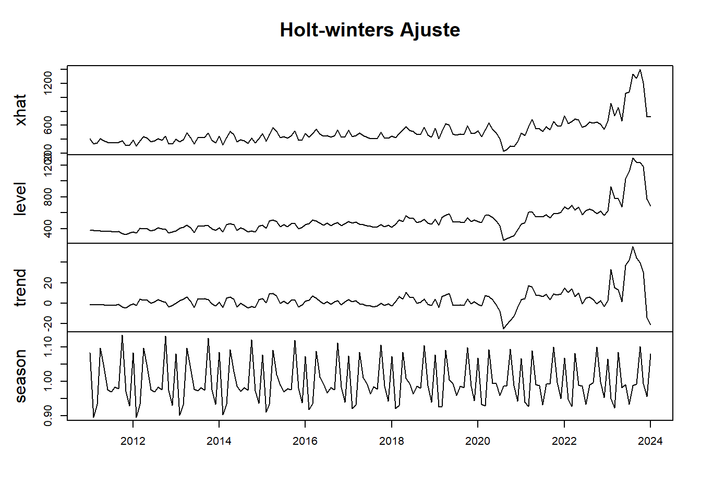
El ajuste del modelo muestra una tendencia constante, un nivel que se aproxima a los datos observados y una estacionalidad periódica entre los años.
5.1.2 - Prediccion Holt-Winters
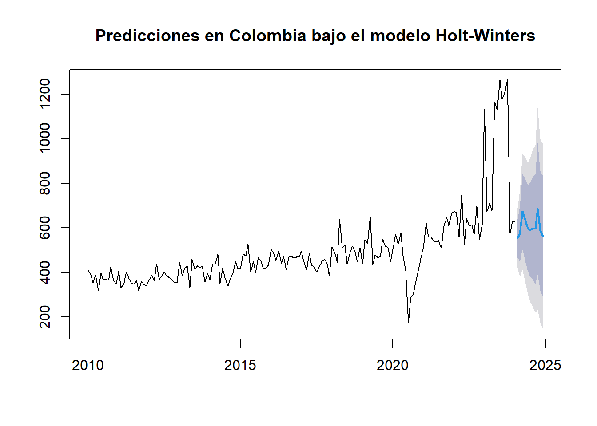
En los valores predichos bajo el modelo Holt-winters, se implementó la predicción de 11 meses posteriores a enero 2024 con intervalos de confianza del 80 y 95%, observando unas barreras correspondientes a 1200 maximo y menos de 200 homicidios sin 0, por observación, el número estaría entre 180 a 150 homicidios.
5.1.3 - Forcast evaluation
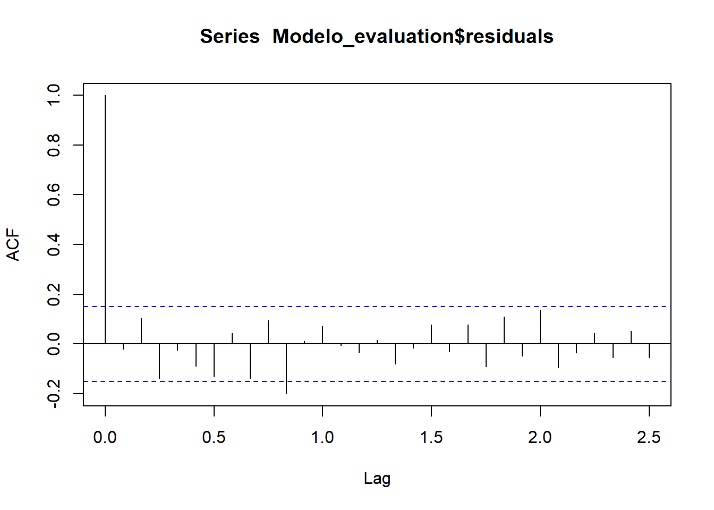
Realizando una autocorrelación a través de la función ‘acf’, se establecen unos rezagos de 30, haciendo alusión a la misma obsevación en el mes anterior, y dejando denotado no tener en cuenta los NA’s en la operación.
Dado lo anterior, se observa que solo un error sobresale de la franja inferior de confianza, denotando la existencia de factores externos que tienen un grado elevado de significancia en la variabilidad de los datos pudiendo atribuirse a los cambios políticos del nuevo gobierno central o la crisis sanitaria.
5.1.4 - Testeo de errores
La prueba Ljung-box evalua la hipotesis nula de que no hay autocorrelación en los datos hasta el rezago especificado, en este caso 30.
##
## Box-Ljung test
##
## data: Modelo_evaluation$residuals
## X-squared = 37.565, df = 30, p-value = 0.1613Dado que p-value es mayor a 0.05 se acepta la hipotesis nula advertida en el parrafo anterior, lo que significa que en primera instacia hay una buena especificación del modelo, las predicciones son confiables y los residuos son aleatorios, lo que permite al modelo capturar adecuadamente la estructura de dependencia temporal de los datos.
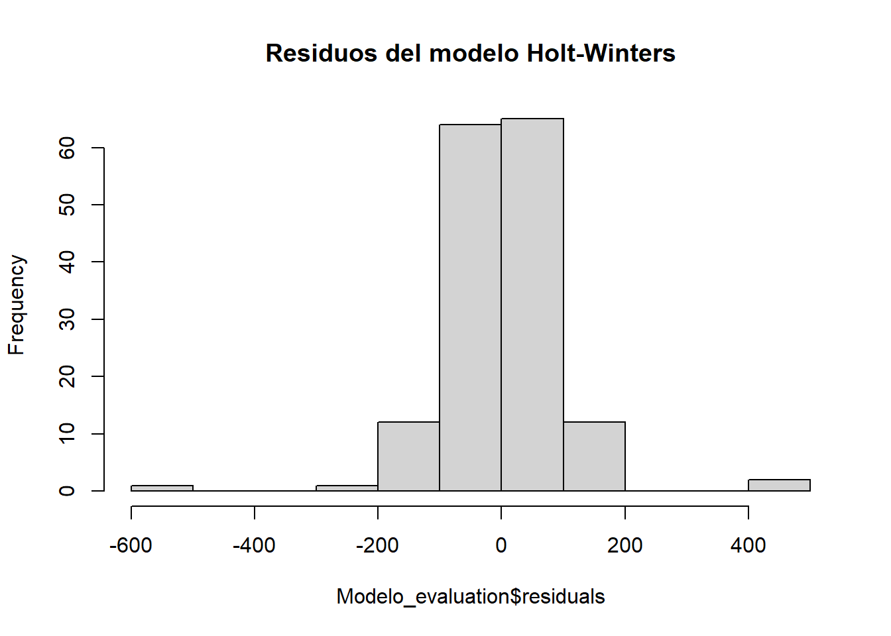
Así las cosas, graficando los residuos del modelo, se tiene que gran parte de las observaciones se encuentran alrededor de 0, lo que sugiere que el modelo no tiene un sesgo sistemático en sus predicciones; captura bien la estacionalidad y la tendencia de los datos; y explica en mayor parte la variabilidad de los datos.
5.1.5 - Modelaje Box - Jenkins
La prueba dicker-fuller realizada en líneas de código anteriores, confirma estacionariedad en los datos con un p-value de 0.01; se ajustó la variabilidad y se halló los rezagos correspondientes. De esta manera, con todas estas observaciones realizadas, este subcapitulo de modelaje se trabajará con el time series conformada de ‘a_estacio’
5.2 Implementacion de Modelo Auto-Arima
## Series: a_estacio
## ARIMA(2,0,1)(0,0,2)[12] with zero mean
##
## Coefficients:
## ar1 ar2 ma1 sma1 sma2
## 0.4779 0.2408 -0.9531 0.2029 0.2801
## s.e. 0.0869 0.0855 0.0358 0.0825 0.1044
##
## sigma^2 = 0.02311: log likelihood = 79.27
## AIC=-146.54 AICc=-146.02 BIC=-127.8En respuesta a la ARIMA(2,0,1)(0,0,2)[12]; se tiene que el modelo mide una parte no estacional con los componentes (2,0,1) y estacional (0,0,2)[12]; esto, permitirá capturar patrones tanto de corto plazo como de largo plazo.De esta manera, la primera parte contiene 2 componentes autoregresivos. 0 de estacionariedad y 1 con media móvil; por su parte, la segunda contiene una media móvil de 2 y el período de evaluación de 12 meses refiriendosea que los datos se presentan de manera anual.
Por su parte los valores bajos de AIC (Akaike Information Criterion) de -146.54 señala a complejidad del modelo, donde a menor valor mejor el modelo, AICc (Corrected AIC) de -146.02 y BIC (Bayesian Information Criterion) de -127.8 sugieren que el modelo se ajusta bien a los datos.
## numeric(0)retorna numeric(0). Esto significa que no se detectaron puntos de cambio en la media de la serie temporal a_estacio utilizando el método ‘AMOC’. En otras palabras, la serie temporal no muestra evidencia de un cambio significativo en la media en ningún punto.
La salida numeric(0) indica que la media de la serie temporal a_estacio es constante a lo largo del tiempo, al menos según el método ‘AMOC’.
5.2.1 - Prediccion Auto-Arima
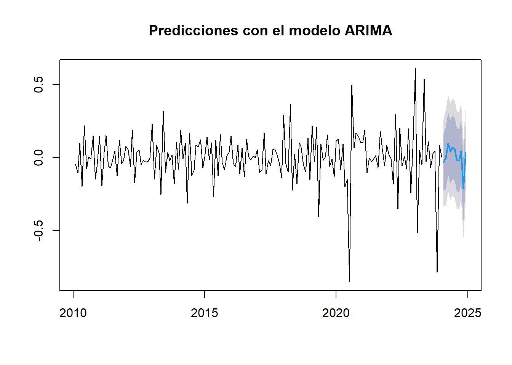
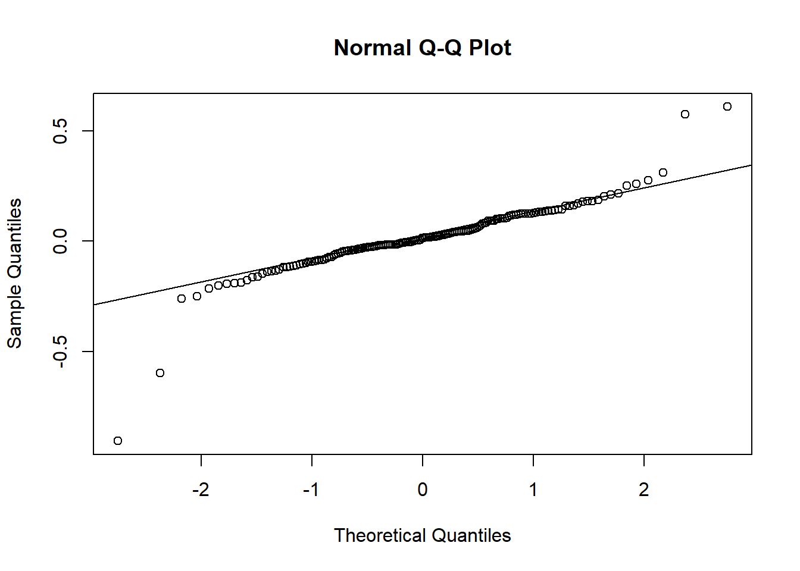
##
## Shapiro-Wilk normality test
##
## data: residuales
## W = 0.85614, p-value = 1.487e-11Se puede observar que que hay residuos extremos tanto en la parte inferior como superior de la linea de ajuste. Adicionalmente en el test de Shapiro el valor W: 0,856, establece que los datos se alejan de un comportamiento normal, en lina con este resultado el p-value: 1.487e-11 indica que existe suficiente evidencia estadistica para rechazar la hipotesis nula Ho:Los datos provienen de una distribucion normal.
##
## Box-Ljung test
##
## data: residuales
## X-squared = 0.001641, df = 1, p-value = 0.9677Dado que la p-value es mayor a 0.05 se acepta la hipotesis nula, lo que significa que en primera instacia hay una buena especificación del modelo, las predicciones son confiables y los residuos son aleatorios, lo que permite al modelo capturar adecuadamente la estructura de dependencia temporal de los datos.
5.3 Implementacion de Modelo Prophet
Se realiza la aplicacion del modelo Prophet, debido a que el modelo solo reconoce las variables ds para unidad de tiempo y y para los valores de resultados se convierten las variables fechas y homicidios a este formato como se observa en la muestra a continuacion:
## ds y
## 1 2010-01-01 411
## 2 2010-02-01 392
## 3 2010-03-01 353
## 4 2010-04-01 389
## 5 2010-05-01 319
## 6 2010-06-01 397Dado a que los datos se encuentran por mes, el ajuste del modelo se realiza activando la estacionalidad anual y desactivando la diaria y semanal.
El objetivo de prediccion para el modelo ajustado se establece para 11 periodos de la serie de tiempo, con una frecuencia mensual, lo que nos entregaria un resultado que abarca hasta diciembre 2024.
5.3.2 - Visualizacion del Modelo
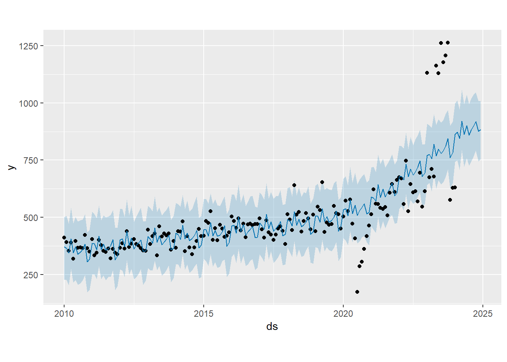
- Los puntos negros representan medidas reales de la serie de tiempo
- La linea azul el pronóstico de Prophet el cual muestra un ajuste significativo a los datos reales
- La banda azul representa el intervalo de incertidumbre, sin embargo este se muestra bastante conservador
En el grafico se puede observar el comportamiento durante el periodo de pandemia y la variación creciente del 2023 por fuera de las bandas predichas por el modelo, este comportamiento se muestra atipico en comparacion con el historico, lo que podria ser relevante analizar teniendo en cuenta la importancia de este indicador para la seguridad publica.
5.3.3 - Componentes del Modelo
A continuacion se presentan los componentes de modelo prophet en los que se observa la tendencia y los residuos, permitiendo identificar el comportamiento del modelo hasta la prediccion.
Para el caso de la tendencia, es claro que la prediccion presenta un comportamiento ascendente para el año 2024.

La grafica de residuales de la prediccion muestran, que a finales de septiembre los homicidios en el país tienden a la baja; adicionalmente, los meses de julio y enero son donde este indicador sufre un incremento significativo en comparacion con el resto de los meses.
5.3.4 - Comparación entre modelos
Se crea una nueva serie de tiempo excluyendo un número de meses determinado con la finalidad de tomar ese tiempo como periodo de evaluación y comparación de los resultados de los modelos
5.3.5 - Creación del modelo Holt-Winter Train
Se realiza un nuevo modelo Holt-Winter para realizar el proceso de validacion de los modelos untilizando la serie de tiempo de entrenamiento con -6 meses.
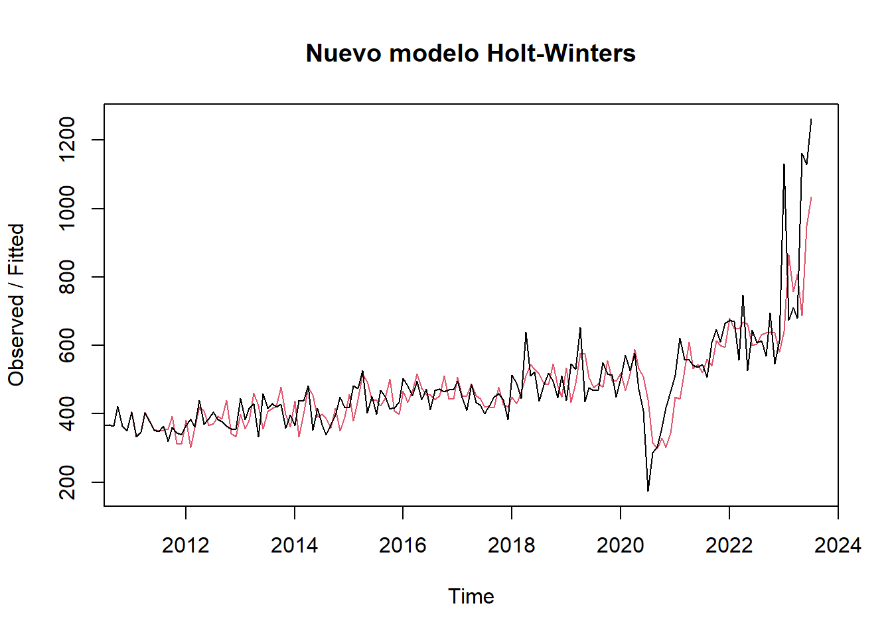
##
## Augmented Dickey-Fuller Test
##
## data: nueva_ts
## Dickey-Fuller = 0.30191, Lag order = 5, p-value = 0.99
## alternative hypothesis: stationaryDado que el p-value = 0.99 es mayor al nivel de significancia de 0.05 se rechaza la hipótesis alternativa de que la serie es estacionaria, luego de realizada la prueba Dicker - Fuller se identifica que se debe diferenciar la serie de tiempo 1 ves ya que no es estacionaria.
5.3.6 - Creación del modelo AutoArima Train
## Series: nueva_ts_estacionaria
## ARIMA(0,0,1)(0,0,2)[12] with zero mean
##
## Coefficients:
## ma1 sma1 sma2
## -0.4869 0.1553 0.2768
## s.e. 0.0778 0.0803 0.1008
##
## sigma^2 = 0.02123: log likelihood = 82.49
## AIC=-156.97 AICc=-156.72 BIC=-144.62En respuesta a la ARIMA(0,0,1)(0,0,2)[12]; se tiene que el modelo mide una parte no estacional con los componentes (0,0,1) y estacional (0,0,2)[12]; esto, permitirá capturar patrones tanto de corto plazo como de largo plazo. De esta manera, la primera parte contiene 0 componentes autoregresivos, 0 de estacionariedad y 1 con media móvil; por su parte, la segunda contiene una media móvil de 2 y el período de evaluación de 12 meses refiriendose a que los datos se presentan de manera anual.
5.3.7 - Creación del modelo Prophet Train
Las predicciones de los modelos ARIMA y Prophet se deben transformar para volver a la escala original, para esto se debe tener como referencia los datos sin transformar
5.3.8 - Valores Originales
Se imprime una muestra de los valores originales de la serie para los ultimos 6 meses, los cuales fueron utilizados para prueba del modelo
## actual_values
## 576 628 630 1177 1208 1264
## 1 1 1 1 1 15.3.9 - Estimacion de Metricas de Modelo
## # A tibble: 3 × 9
## Model ME RMSE MAE MPE MAPE MASE RMSSE ACF1
## <chr> <dbl> <dbl> <dbl> <dbl> <dbl> <dbl> <dbl> <dbl>
## 1 Holt-Winters 346. 482. 346. 56.2 56.2 2.09 1.56 0.478
## 2 ARIMA -696. 760. 696. -73.1 73.1 4.20 2.45 0.444
## 3 Prophet 335. 500. 366. 56.0 58.6 2.21 1.61 0.484## # A tibble: 3 × 9
## Model ME RMSE MAE MPE MAPE MASE RMSSE ACF1
## <chr> <dbl> <dbl> <dbl> <dbl> <dbl> <dbl> <dbl> <dbl>
## 1 Holt-Winters 346. 482. 346. 56.2 56.2 2.09 1.56 0.478
## 2 ARIMA 252. 406. 318. 44.0 49.3 1.92 1.31 0.480
## 3 Prophet -119. 349. 327. -1.27 35.4 1.97 1.13 0.463Se realiza el ejercicio para diferentes periodos de evaluación: 12, 6 y 3 meses, es decir, se crea a partir de la serie de tiempo original una serie de entrenamiento y otra de prueba con el número de meses mencionado. En esta primera evaluación se usa la serie de datos trasnformados para que sea estacionaria antes de crear los modelos ARIMA y Prophet.
Para los 12 meses se obtuvieronlos siguientes resultados:
Model ME RMSE MAE MPE MAPE MASE RMSSE ACF1
1 Holt-Winters -95.1 333. 312. 0.104 33.9 2.10 1.28 0.271
2 ARIMA -805. 853. 805. -85.6 85.6 5.43 3.28 0.191
3 Prophet 405. 536. 418. 60.5 61.6 2.82 2.06 0.295
Para un periodo de evaluación de 6 meses se obtuvo:
Model ME RMSE MAE MPE MAPE MASE RMSSE ACF1
1 Holt-Winters 346. 482. 346. 56.2 56.2 2.09 1.56 0.0378
2 ARIMA -696. 760. 696. -73.1 73.1 4.20 2.45 -0.00611
3 Prophet 335. 500. 366. 56.0 58.6 2.21 1.61 0.0812
Para un periodo de evaluación de 3 meses los resutlados fueron:
Model ME RMSE MAE MPE MAPE MASE RMSSE ACF1
1 Holt-Winters 668. 669. 668. 109. 109. 24.7 18.2 -0.000571
2 ARIMA -397. 398. 397. -65.0 65.0 14.7 10.8 -0.0982
3 Prophet 850. 856. 850. 139. 139. 31.5 23.3 -0.306
En esta segunda evaluación se realizan las predicciones de los modelos ARIMA y Prophet con la serie sin trasnformar.
Para los 12 meses se obtuvieronlos siguientes resultados:
Model ME RMSE MAE MPE MAPE MASE RMSSE ACF1
1 Holt-Winters -95.1 333. 312. 0.104 33.9 2.10 1.28 0.271
2 ARIMA -38.0 289. 280. 5.81 32.2 1.89 1.11 0.231
3 Prophet -258. 397. 306. -19.9 27.6 2.07 1.53 0.237
Para un periodo de evaluación de 6 meses se obtuvo:
Model ME RMSE MAE MPE MAPE MASE RMSSE ACF1
1 Holt-Winters 346. 482. 346. 56.2 56.2 2.09 1.56 0.0378
2 ARIMA 252. 406. 318. 44.0 49.3 1.92 1.31 0.0302
3 Prophet -119. 349. 327. -1.27 35.4 1.97 1.13 0.0369
Para un periodo de evaluación de 3 meses los resutlados fueron:
Model ME RMSE MAE MPE MAPE MASE RMSSE ACF1
1 Holt-Winters 668. 669. 668. 109. 109. 24.7 18.2 -0.000571
2 ARIMA 633. 634. 633. 104. 104. 23.4 17.2 -0.218
3 Prophet 282. 284. 282. 46.1 46.1 10.4 7.72 -0.126
De los resultados obtenidos se evidencia en primera medida que para los modelos ARIMA y Prophet las trasnformaciones efectuadas, usando las funciones log() y diff(), con la finalidad de tener una serie de datos estacionaria, dio como resultado valores de predicción con errores más altos una vez los datos se trasnformaron a la escala original. Esto sucedió en todos los casos a excepción de lo sucedido con el modelo ARIMA al evaluarse un periodo de predicción de 3 meses. Teniendo en consideración los resultados obtenidos de las predicciones con los modelos ARIMA y Prophet usando la serie de tiempo original, se puede concluir a partir de la métrica RMSE que el mejor modelo para realizar predicciones a largo plazo (12 meses) fue el modelo ARIMA y para los periodos de evaluación de 6 y 3 meses, el modelo con mejores resultados fue el Prophet.